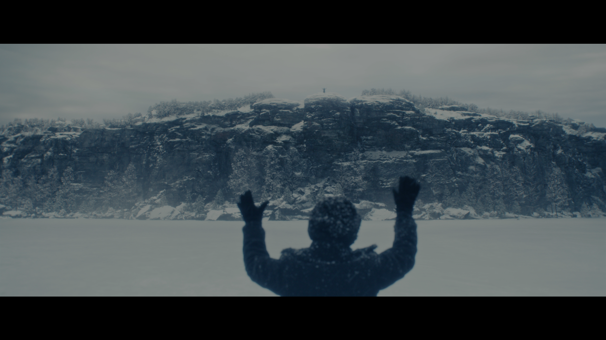

A · QuietToday's drawn treatment (`.pl-buffer`), reused verbatim for the cold start. Nothing but a spinner and the one already-translated string. Safest, and the least reassuring after 20 seconds.
B · GroundedSame spinner, plus the one thing that proves the right thing is happening: the title you pressed play on. A sweep keeps moving so a long wait never looks frozen. No cause, no method, no timing hint.
Severance
Chikhai Bardo
Season 2 · Episode 7
Loading…
C · Title cardThe backdrop we already have loaded fills the screen instead of black, dimmed hard, with an ambient sweep pinned to the bottom edge. Reads as "the film is starting", not "the app is thinking".

Severance · S2 E7
Chikhai Bardo
C (moment) · mid-playback stall — chosenChosen treatment, 0–60 s: the frozen frame stays, and the transport chrome comes up on its own so you can see exactly where you are. The spinner takes the play button's place; the buffered-ahead band is the only thing that moves. Debounced ~400 ms so a half-second hiccup never shows at all.
Chikhai Bardo
Severance · S2 E7
00:42:18−00:31:04
D (moment) · seek / scrubLightest of the four: no overlay, no words. The scrub tile carries the spinner while its frame resolves, so the transport never blanks.
Chikhai Bardo
Severance · S2 E7
00:42:18−00:31:04
Phone · cold start (B)Same three parts at arm's length: 40 px spinner, 17 px label, title context kept. Web build inherits this scale.
Severance
Chikhai Bardo
Season 2 · Episode 7
Loading…
Phone · mid-playback stallSame rule at phone scale: chrome up, position visible, spinner in the play button's place.
Chikhai Bardo
Severance · S2 E7
00:42:18−00:31:04
What this proposes
Chosen: Direction B (Grounded) for the cold start — black, pulse, title context, sweep, one string. A mid-playback stall instead raises the transport chrome over the frozen frame for its first 60 s, so the viewer keeps their position and the spinner simply stands in for the play button. Seeks keep the lightest case: a spinner inside the scrub tile, no overlay, no words. Back is never prompted and always ends the session.
Timing ladder — one state, four thresholds
0 – 400 ms
Nothing. A direct play that starts instantly must never flash a spinner. Debounce applies to B, C and D alike.
400 ms +
Overlay appears: spinner/pulse, title context, sweep, “Loading…”. Identical wording whatever the cause.
60 s +
A stall this long dims further and brings up the centre spinner, since the chrome alone stops being enough. Still no explanation, no timeout, no added affordance.
Back
Always available, never advertised, and it ends the session — the stream stops preparing, the transcode is released, nothing keeps running behind the next thing you watch.
first frame
Overlay cross-fades out over 250 ms. Never a hard cut from spinner to picture.
The seven open questions, answered
1 · DebounceYes, ~400 ms, on all three new moments. Session negotiation (A) keeps today's undebounced behaviour.
2 · Long-wait reassuranceMotion, not words. The sweep and the pulse both move continuously, so a 20-second wait never looks like a frozen frame — without a single character of copy that could hint at why.
3 · Escape hatchNo — rejected. Back already works at every moment and needs no prompt; adding one implies leaving is costly. Leaving tears the session down rather than preparing a stream nobody is waiting for, so there is nothing to reassure the viewer about.
4 · B vs C visuallyDeliberately different. Cold start has nothing to preserve, so it owns the screen. A stall has both a frame and a position to preserve, so it shows them: chrome up, spinner in the play button's slot, no centre overlay for the first 60 s.
5 · SeekIts own lighter case: spinner inside the scrub tile, no overlay, no text. A seek is an answer to the viewer's own input, not an interruption.
6 · CopyReuse the existing “Loading…” / “Indlæder…” / “Ledur inn…” string everywhere. No new locale work, no drift risk, and it is the only wording already cleared against R180.
7 · Phone / webSame three parts, scaled: 40 px spinner, 26 px title, 15 px label. Leaving is the platform back gesture or button, which ends the session exactly as on TV.
Binding constraint (R180 FR-RV-ASP1-2): nothing here may vary by delivery method. The same overlay, the same string and the same timings cover an instant direct play, an audio-only transcode and a 20-second 4K transcode. The title context in B is catalog data the viewer already saw — it is not a cue about how the stream is being delivered.